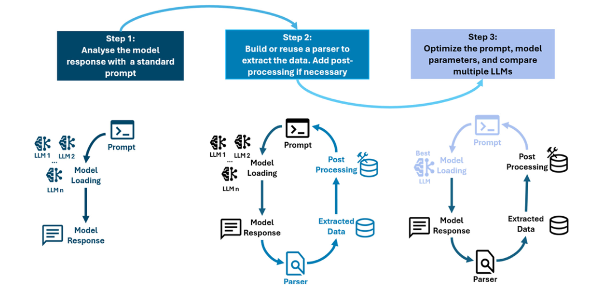
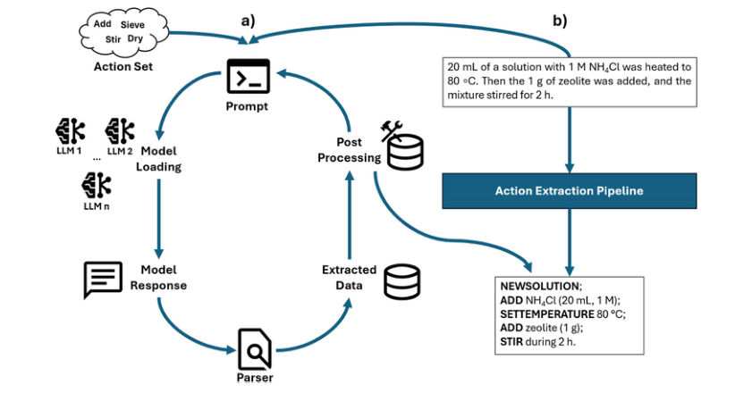
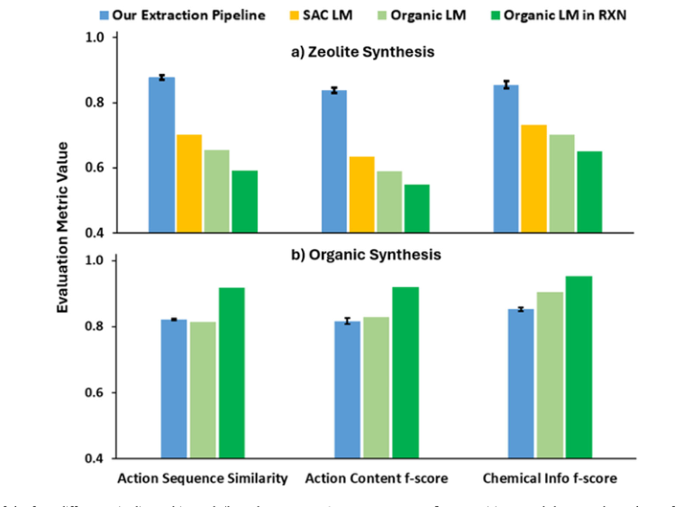
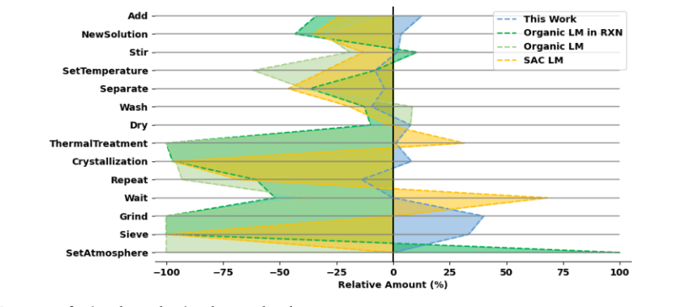
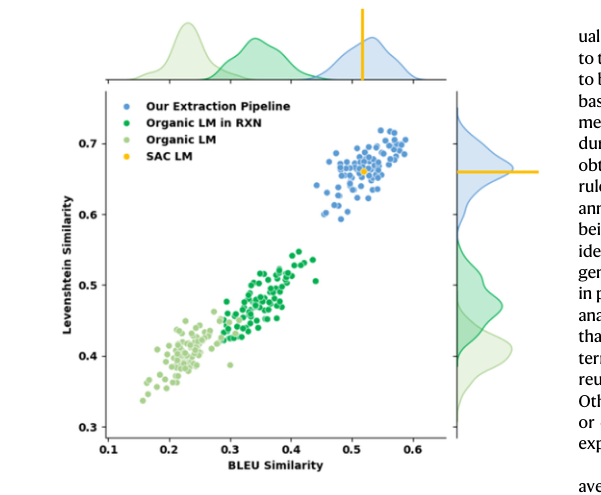

全文精读
免训练、可扩展领域的大语言模型标准化制备流程自动提取方法
A training-free, domain-extensible LLM-based approach for automated extraction of standardized preparation procedures
解读更新 2026-11-15 04:44 · 依据论文全文整理
全文精读已完成，文章版正在逐步升级。现有内容可继续阅读。
化学制备文献包含丰富的操作知识，但非结构化叙述难以保留动作顺序与参数关系。本文以显式动作集、两轮提取和规则后处理构建xlmExLab流程，无需额外训练模型。沸石测试取得0.89的动作序列相似度，跨领域表现具有竞争力，但有机合成仍落后于RXN专用流程。其阅读价值在于展示领域知识如何转为可执行抽取约束，而非证明通用模型可以替代专家设计。
研究问题
论文关注制备文字如何转成保留顺序、条件与物质关系的动作序列。普通表格难容纳不同流程的可变操作，专用模型又受训练领域和动作词表限制。研究目标因此不是孤立识别实体，而是降低新领域构建完整流程抽取器的训练与标注负担。
方法与路线
xlmExLab将动作定义写入提示，先提取有序操作及上下文，再识别相关物质、用量和浓度，以解析器及Python类统一输出。沸石数据分为75条优化流程和110条测试流程；作者据多模型错误设计后处理，再筛选模型、解码参数与提示。
创新与比较
方法特点是把领域适配主要放在动作模式和解析规则，而非额外微调模型。专家据实际输出合并、增删操作，并结合动作参数依赖补全序列。解读：其贡献更接近可组合、可替换模型的工程框架，资料不足以支持其首次提出所有组成技术的判断。
证据与发现
沸石测试中，动作序列相似度、动作内容及化学信息F-score分别为0.89、0.84、0.85，各带±0.01。作者报告后处理三项相对改善为9.5%、15.0%、6.6%。有机合成比较中RXN三项均更好，说明跨域适应性并不等于领域内全面领先。
局限与边界
免训练仍依赖专家规则和参考标注；带时长的温度动作转成结晶会过预测，且P11的Wait规则与P5表述需澄清。SAC原训练测试划分不明。原文件P12文献40缺年份、出版来源等信息，影响相关引文追溯；这不是公式缺失，不能据此否定实验。 原文核对： 原页已核实参考文献40仅为“Kleene, S. C. et al. Representation of events in nerve nets and finite automata.”，随后直接进入文献41；缺少年份、出版来源及页码或其他定位信息。该缺项影响对P9正则表达式相关引文的追溯，不构成实验公式缺失，也不影响其余页面识读；未自行补写书目信息。
方向关联
解读：显式动作、参数约束及序列评价可启发运维工单结构化、结构制造记录和可靠性过程追溯。但论文验证对象是三个化学领域，没有设备故障预测、结构优化或失效概率实验；与这些研究方向的联系属于数据组织方法迁移，而非直接成果证据。
后续研究建议
建议先选择少量运维或制造记录，定义动作、关键参数与依赖关系，以独立测试集比较直接提取和规则后处理，分别报告顺序、内容及实体误差。尤其应审计默认值和强制动作转换，并核验归档代码与提示；这些是迁移研究建议，尚非本文完成的验证。
阅读建议
推荐作为领域流程知识抽取的方法参考，重点阅读动作集设计、分层评价和后处理偏差；不宜将其视为智能运维或结构可靠性方法已经验证的证据。
原图未改动。以下图注来自标注的来源，不据此补写摘要未报告的实验结论。
已取得的论文原图


原文图注与出处
Fig. 7 | Step-by-step methodology to build an extraction pipeline from scratch: (1) test multiple model responses on a default prompt; (2) Add the parser and post-processing based on the responses; (3) Test multiple prompts, models,
Costa, Daniel P. et al.
原文图页 · CC BY-NC-ND 4.0

原文图注与出处
Fig. 1 | Laboratory action extraction pipeline structure overview (a) and example extracting laboratory actions from a zeolite synthesis paragraph (b). The overview is original and was built using Microsoft PowerPoint.
Costa, Daniel P. et al.
原文图页 · CC BY-NC-ND 4.0

原文图注与出处
Fig. 4 | Performance of the four different pipelines: this work (based on gemma-3- 12b-it), open-access LM for organic synthesis, LM for organic synthesis as in the RXN API, LM for single-atom catalyst synthesis over two different datasets for (a) zeolite synthesis; b organic synthesis (see Supplementary Table 5.2 for the data used). The performance metrics for our extraction pipeline correspond to the
Costa, Daniel P. et al.
原文图页 · CC BY-NC-ND 4.0

原文图注与出处
Fig. 5 | Relative Percentage of actions detected against the ground truth across the four different pipelines (This work is based on gemma-3-12b-it, an open- access LM for organic synthesis, an LM for organic synthesis in the RXN API,
Costa, Daniel P. et al.
原文图页 · CC BY-NC-ND 4.0已取得的论文原图


原文图注与出处
Fig. 6 | BLEU and Levenshtein ratio for the original model published by Vaucher et al.16 and its RXN version32,33, the model published by Suvarna et al.18, and one LLM tested on our pipeline using gemma-3-12b-it on the SAC action set. The area for the model published by Suvarna et al. is not representative. Source data are provided as a Source Data file.
Costa, Daniel P. et al.
原文图页 · CC BY-NC-ND 4.0